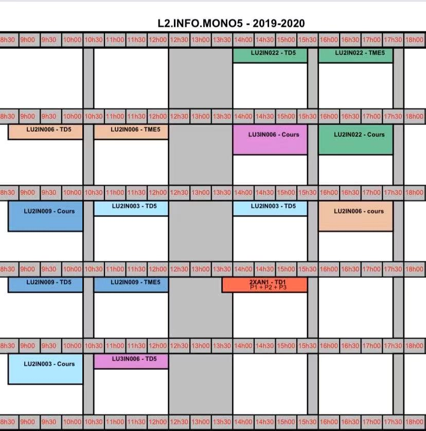

Licence 2 S2
Informatique
[LU2IN006] Structures de données(TME Moodle)
[LU2IN009] Introduction aux bases de données relationnelles
LU2IN003] Algorithmique 1(Moodle)
[LU3IN006] Logique(Moodle for QCM.Edukera)
[LU2IN022] Structure des architectures client-serveur

Site de Moodle
Site de Licence